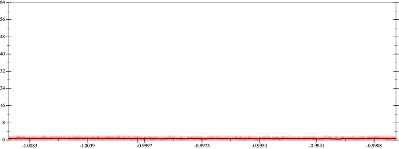
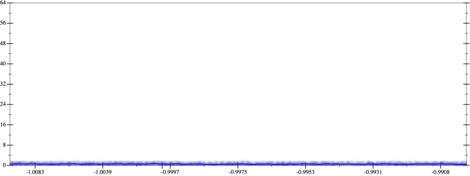
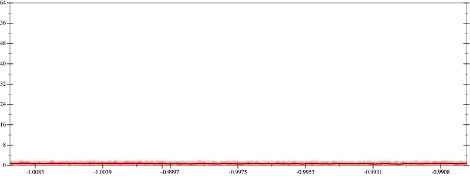
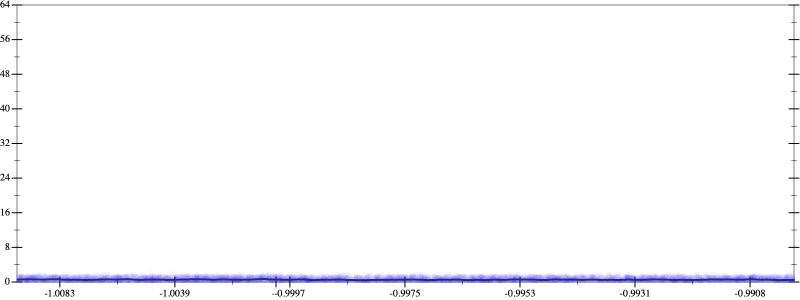

Initial program 0.7
\[\left(\left(\left(\left(\left(\left(\left(\left(\left(1.0 + -12.0 \cdot x\right) + 33.0 \cdot \left(x \cdot x\right)\right) + -36.666667 \cdot \left(\left(x \cdot x\right) \cdot x\right)\right) + 20.625 \cdot \left(\left(\left(x \cdot x\right) \cdot x\right) \cdot x\right)\right) + -6.6 \cdot \left(\left(\left(\left(x \cdot x\right) \cdot x\right) \cdot x\right) \cdot x\right)\right) + 1.283333 \cdot \left(\left(\left(\left(\left(x \cdot x\right) \cdot x\right) \cdot x\right) \cdot x\right) \cdot x\right)\right) + -0.157143 \cdot \left(\left(\left(\left(\left(\left(x \cdot x\right) \cdot x\right) \cdot x\right) \cdot x\right) \cdot x\right) \cdot x\right)\right) + 0.012277 \cdot \left(\left(\left(\left(\left(\left(\left(x \cdot x\right) \cdot x\right) \cdot x\right) \cdot x\right) \cdot x\right) \cdot x\right) \cdot x\right)\right) + -0.000606 \cdot \left(\left(\left(\left(\left(\left(\left(\left(x \cdot x\right) \cdot x\right) \cdot x\right) \cdot x\right) \cdot x\right) \cdot x\right) \cdot x\right) \cdot x\right)\right) + 1.8 \cdot 10^{-05} \cdot \left(\left(\left(\left(\left(\left(\left(\left(\left(x \cdot x\right) \cdot x\right) \cdot x\right) \cdot x\right) \cdot x\right) \cdot x\right) \cdot x\right) \cdot x\right) \cdot x\right)\]
Applied simplify0.6
\[\leadsto \color{blue}{\left(\left(\left(x \cdot x\right) \cdot \left(-36.666667 \cdot x + 33.0\right) + \left(x \cdot -12.0 + 1.0\right)\right) + \left(\left({x}^{3} \cdot {x}^{3}\right) \cdot \left(1.283333 + -0.157143 \cdot x\right) + \left(\left(x \cdot x\right) \cdot \left(x \cdot x\right)\right) \cdot \left(20.625 + -6.6 \cdot x\right)\right)\right) + \left(\left(\left(\left(x \cdot x\right) \cdot \left(x \cdot x\right)\right) \cdot \left(\left(x \cdot x\right) \cdot \left(x \cdot x\right)\right)\right) \cdot \left(1.8 \cdot 10^{-05} \cdot \left(x \cdot x\right)\right) + \left(\left(\left(x \cdot x\right) \cdot \left(x \cdot x\right)\right) \cdot \left(\left(x \cdot x\right) \cdot \left(x \cdot x\right)\right)\right) \cdot \left(-0.000606 \cdot x + 0.012277\right)\right)}\]
Taylor expanded around 0 0.6
\[\leadsto \left(\left(\left(x \cdot x\right) \cdot \left(-36.666667 \cdot x + 33.0\right) + \left(x \cdot -12.0 + 1.0\right)\right) + \left(\left({x}^{3} \cdot {x}^{3}\right) \cdot \left(1.283333 + -0.157143 \cdot x\right) + \left(\left(x \cdot x\right) \cdot \left(x \cdot x\right)\right) \cdot \left(20.625 + -6.6 \cdot x\right)\right)\right) + \left(\left(\left(\left(x \cdot x\right) \cdot \left(x \cdot x\right)\right) \cdot \left(\left(x \cdot x\right) \cdot \left(x \cdot x\right)\right)\right) \cdot \left(1.8 \cdot 10^{-05} \cdot \left(x \cdot x\right)\right) + \left(\left(\left(x \cdot x\right) \cdot \left(x \cdot x\right)\right) \cdot \color{blue}{{x}^{4}}\right) \cdot \left(-0.000606 \cdot x + 0.012277\right)\right)\]
Applied simplify0.6
\[\leadsto \color{blue}{\left(\left(\left(\left(1.8 \cdot 10^{-05} \cdot x\right) \cdot {x}^{3}\right) \cdot \left({x}^{3} \cdot {x}^{3}\right) + \left(\left(x \cdot x\right) \cdot \left(x \cdot x\right)\right) \cdot \left(x \cdot -6.6 + 20.625\right)\right) + \left(x \cdot -0.000606 + 0.012277\right) \cdot \left(\left(\left(x \cdot x\right) \cdot \left(x \cdot x\right)\right) \cdot {x}^{4}\right)\right) + \left(\left(-12.0 \cdot x + 1.0\right) + \left(\left({x}^{3} \cdot {x}^{3}\right) \cdot \left(1.283333 + -0.157143 \cdot x\right) + \left(x \cdot -36.666667 + 33.0\right) \cdot \left(x \cdot x\right)\right)\right)}\]
Taylor expanded around 0 0.5
\[\leadsto \left(\left(\left(\left(1.8 \cdot 10^{-05} \cdot x\right) \cdot {x}^{3}\right) \cdot \left({x}^{3} \cdot {x}^{3}\right) + \color{blue}{{x}^{4}} \cdot \left(x \cdot -6.6 + 20.625\right)\right) + \left(x \cdot -0.000606 + 0.012277\right) \cdot \left(\left(\left(x \cdot x\right) \cdot \left(x \cdot x\right)\right) \cdot {x}^{4}\right)\right) + \left(\left(-12.0 \cdot x + 1.0\right) + \left(\left({x}^{3} \cdot {x}^{3}\right) \cdot \left(1.283333 + -0.157143 \cdot x\right) + \left(x \cdot -36.666667 + 33.0\right) \cdot \left(x \cdot x\right)\right)\right)\]
Applied simplify0.5
\[\leadsto \color{blue}{\left(\left(\left(1.0 + -12.0 \cdot x\right) + \left({x}^{3} \cdot {x}^{3}\right) \cdot \left(1.283333 + x \cdot -0.157143\right)\right) + \left(\left(x \cdot x\right) \cdot \left(x \cdot -36.666667 + 33.0\right) + \left({x}^{3} \cdot {x}^{3}\right) \cdot \left({x}^{3} \cdot \left(1.8 \cdot 10^{-05} \cdot x\right)\right)\right)\right) + {x}^{4} \cdot \left(\left(-6.6 \cdot x + 20.625\right) + \left(\left(x \cdot x\right) \cdot \left(x \cdot x\right)\right) \cdot \left(0.012277 + -0.000606 \cdot x\right)\right)}\]
Taylor expanded around 0 0.5
\[\leadsto \left(\left(\left(1.0 + -12.0 \cdot x\right) + \left({x}^{3} \cdot {x}^{3}\right) \cdot \left(1.283333 + x \cdot -0.157143\right)\right) + \left(\left(x \cdot x\right) \cdot \left(x \cdot -36.666667 + 33.0\right) + \left({x}^{3} \cdot {x}^{3}\right) \cdot \left({x}^{3} \cdot \left(1.8 \cdot 10^{-05} \cdot x\right)\right)\right)\right) + {x}^{4} \cdot \left(\left(-6.6 \cdot x + 20.625\right) + \color{blue}{{x}^{4}} \cdot \left(0.012277 + -0.000606 \cdot x\right)\right)\]
Applied simplify0.5
\[\leadsto \color{blue}{\left(\left(-0.000606 \cdot x + 0.012277\right) \cdot \left({x}^{4} \cdot {x}^{4}\right) + \left({x}^{4} \cdot \left(20.625 + -6.6 \cdot x\right) + \left(x \cdot -12.0 + 1.0\right)\right)\right) + \left(\left(x \cdot x\right) \cdot \left(-36.666667 \cdot x + 33.0\right) + \left({x}^{3} \cdot {x}^{3}\right) \cdot \left(\left(1.283333 + -0.157143 \cdot x\right) + {x}^{3} \cdot \left(1.8 \cdot 10^{-05} \cdot x\right)\right)\right)}\]
 
